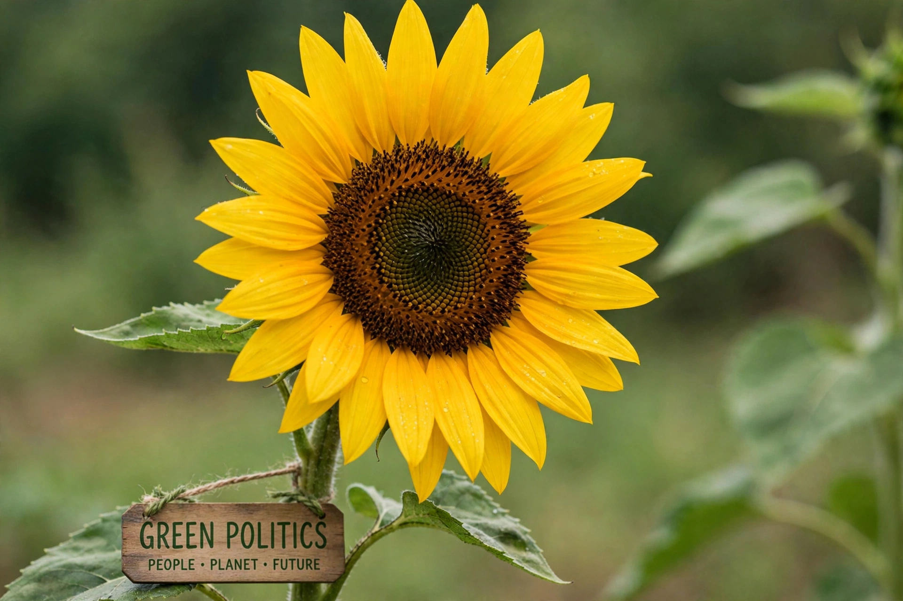

Green politics, or ecopolitics, is a political ideology that places environmental sustainability, social justice, grassroots democracy, and nonviolence at the centre of its programme. It emerged in the 1970s from environmental, anti-nuclear, and peace movements, and is represented politically by Green parties in many countries.
The Global Greens Charter (2001) sets out six guiding principles: ecological wisdom, social justice, participatory democracy, nonviolence, sustainability, and respect for diversity. Earlier, the German Green Party's "Four Pillars" — ecology, social responsibility, grassroots democracy, and nonviolence — formulated by figures including Petra Kelly, served as a foundational statement.
The first parties calling themselves Green appeared in the 1970s, including the United Tasmania Group (1972), often described as the world's first green party, and the West German Greens (Die Grünen), founded in 1980, which entered the Bundestag in 1983. Green parties have since participated in coalition governments in Germany, Finland, Belgium, Ireland, New Zealand, and elsewhere.
Green politics typically advocates rapid action on climate change, renewable energy, public transport, protection of biodiversity, and opposition to nuclear power and weapons. Economically, Greens vary: many combine market regulation with welfare provision and support for cooperatives and local economies; the ideology overlaps with eco-socialism on its left and with green liberalism and green conservatism in other variants.
Critics argue that green parties face tensions between fundamentalist and pragmatic ("fundi" and "realo") wings, that their policies can raise energy and housing costs, and that single-issue environmental appeal limits their reach. Supporters reply that ecological limits make green concerns foundational to all other policy areas.
See also: Environmentalism · Global Greens · Sustainability